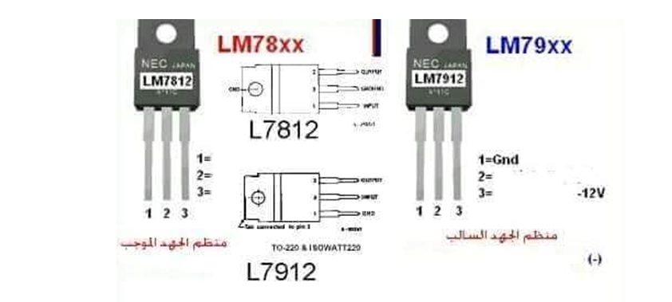
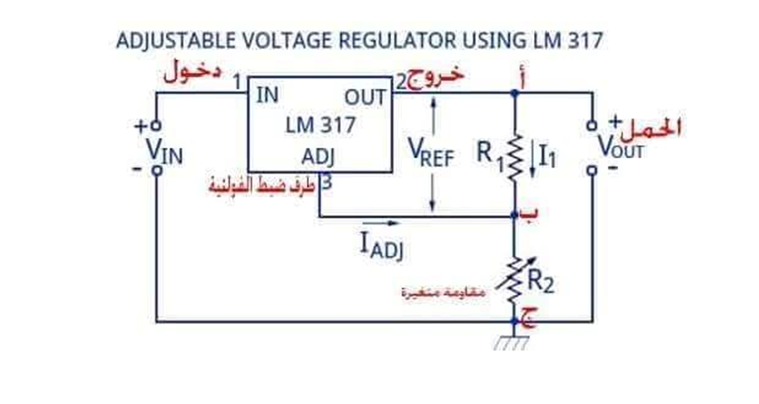

ما هو منظم جهد 7805:
هو عبارة عن دارة متكاملة ذات ثلاثة أرجل، تستخدم لتوفير وتنظيم جهداً كهربائياً ثابت نسبيا بمقدار 5 فولت من أي مصدر لفرق جهد آخر ابتداءً من 7 وحتى 18 فولت بحسب دليل المستخدم علماً أن التيار الكهربائي المار فيها والخارج منها هو تيار مستمر “DC” .
أستخداماته:
1. معظم الدارات الالكترونيه الحساسه والتي تعمل على جهد 5 فولت.
2. دارات التغذية العكسيه .
3. المنظمات الكهربائيه .
4. تغذية المحركات الصغيره.
5. المراوح .
6. الحواسيب .
7. شواحن اجهزه الموبايل التي تعمل على بطارايات السيارات.
مميزاته:
1. تنظيم وتوفير جهد 5v وامبير 100mA ويصل لـ 1000mA.
2. القدرة على استقبال جهد من 7.5 حتى 18 فولت كحد اقصى ويستطيع في بعض الاحيان ان يصل الى 35 فولت .
3. الحماية من الجهد الزائد وتتم عملية فصل للجهد في حالة ارتفاع درجة حرارته.
4. سهل جداً في تصميم الدائرة الخاصة به ، بوجود ثلات نقاط توصيل فقط.
5. متوفر في الاسواق ويتستخدم معاه مكونات متوفرة ايضاً وشائعة.
6. ويستخدم في العديد من الاجهزة الحديثة للحفاظ على الجهد .
مكونات منظم جهد 7805 :
1. مقاومات.
2. ترانزستورات.
3. ثنائي عادي.
4. مواسعات.
5. ثنائيات زينر.
يتم توصيل هذه المكونات معاً لتوليد جهد منظم بمقدار 5 فولت ، الشكل التالي يوضح تركيب منظم الجهد من الداخل:
انواع منظم الجهد :
هناك نوعان من منظم الجهد وهما منظم الجهد الثابت و منظم الجهد المتغير:
A. منظم الجهد الثابت:
وهو الذي يقوم بأخراج جهد ثابت القيمة مثل منظم ٥ فولت او ٦ فولت او غير ذلك.
• انواع منظم الجهد الثابت :
1. منظم الجهد الموجب ويبدأ بالرقم LM78xx وهو الأكثر استخداما وانتشارا.
2. منظم الجهد السالب ويبدأ بالرقم LM79xx ويستخدم في حالات خاصة فقط .
يتم تحديد فولت الخرج للمنظم بالرقمين الاخيرين الواقعين بعد الرقمين 78 أو 79 أمثله علي ذلك:
• منظم جهد 7803 يخرج 3 فولت.
• منظم جهد 7805 يخرج 5 فولت.
• منظم جهد 7806 يخرج 6 فولت.
• منظم جهد 7809 يخرج 9 فولت.
• منظم جهد 7812 يخرج 12 فولت.

B. منظم الجهد المتغير:
ويتم الحصول منه على فولتيات مختلفة عن طريق مقاومة متغيرة لتغير فولت الخرج، يتكون من ثلاثة أطراف كما هو الحال في منظم الجهد الثابت طرف الدخول رقم 1 وطرف الخروج رقم 2 والطرف الثالث يسمى طرف الضبط والذي يناظر طرف الأرضي وسمي بطرف الضبط لأنه في هذا النوع يتم ضبط الفولتية الخارجة من منظم الجهد عن طريق هذا الطرف بواسطة تغيير الجهد المسلط على طرف الضبط وذلك عن طريق تغيير قيمة المقاومة المتغيرة.
